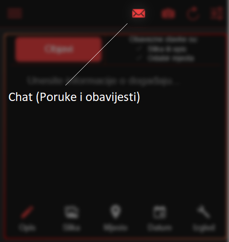

<ion-content style="margin-top:0; padding-top:0px;">
    <div class="background_color">
        <h3 id="h_tag">Dobrodoši u krati vodič kako koristiti aplikaciju. Ovaj vodič će Vam uvijek biti dostupan na Menu / Profil / Kako koristiti aplikaciju.</h3>
        
        
        <div style="display:none" id="t1" class="image">
            <p>Zagljavlje (pomoćna traka)</p>
            <p>- gdje god da se nalazite u aplikaciji imat će te na vrhu uvijek pomoću traku. Na njoj se nalaze drukčije stvari ovisno o tome gdje se nalazite. Na primjer ako ste na naslovnici imat će te ove mogućnost: </p>
            
        </div>
        <div style="display:none" id="t2" class="image">
            <p>Izbornik (Menu)</p>
            <p>- s lijeve strane u zaglavlju prvo dolazi izbornik. Pritiskom na njega otvoriti će se novi prozor koji će pokrivati dio trenutnog ekrana. U izborniku se nalaze Vaši podaci, profi, postavke, pitanja ... Ovako izgleda izbornik: </p>
            
        </div>
        <div style="display:none" id="t3" class="image">
            <p>Chat (Poruke i obavijesti)</p>
            <p>- desno od izbornika se nalazi Chat koji služi za slanje/primanje poruka ali i za obavijesti. Chat je potupno anoniman i dostupan svima. Izgled: </p>
            
        </div>
        <div style="display:none" id="t4" class="image">
            <p>Brza fotografija </p>
            <p>- desno od chat-a nalazi se opcija brza fotografija koja omogućava otvaranja Vaše kamere te nakon fotografiranja, sadržaj će automatski biti dodan u stvaranje nove objave ali i u Vašu galeriju. O novoj objavi više nakon uputa o zaglavlju. Izgled: </p>
            
        </div>
        <div style="display:none" id="t5" class="image">
            <p>Osvježi (Refresh)</p>
            <p>- nakon brze fotografije nalazi se osvježavanje. Koje osim što će osvježiti naslovnicu podignuti će Vaš pregled skroz gore. Na primjer ako ste pregledali 30 objava i želite brzo doći na vrh ova mogućnost će Vas odma podignuti na vrh, također će i osvježiti naslovnicu. Izgled: </p>
            
        </div>
        <div style="display:none" id="t6" class="image">
            <p>Filtriranje</p>
            <p>- s desne strane izbornika nalazi se filter. Na filteru možete postaviti pregled samo određenih gradova ili država.</p>
            
        </div>


        <div style="display:none" id="t7" class="image">
            <p>Opis objave</p>
            <p>- kod izrade objave vrlo je bitno navesti opis kao neke informacije o događaju. Ako je ikona opisa crvena (plava na svijetloj temi) to znači da je otvoren dio objave gdje se unose informacije o navedenom (isto vrijedi i za sliku, mjesto, datum i izgled). Primjer ikone ako je otvoren dio za unošenje informacija o događaju:</p>
            
        </div>
        <div style="display:none" id="t8" class="image">
            <p>Slika objave</p>
            <p>- nakon opisa nalazi se slika. Pritiskom na ikonu otvara se dio za unošenje slike o događaju. Slika može biti dodana i kroz brzu fotografiju a sadržaj koji ste odarali će biti prikazan ispod. Primjer ikone ako nije izabran dio za unos slike: </p>
            
        </div>
        <div style="display:none" id="t9" class="image">
            <p>Mjesto objave</p>
            <p>- svaka objava mora imati izabrano mjesto kako bi filtriranje bilo što točnije te kako bi ostali korisnici lakše prepoznali osobe sa slike. Primjer ikone za odabir mjesta ako nije otvoren dio za unos mjesta: </p>
            
        </div>
        <div style="display:none" id="t10" class="image">
            <p>Datum objave</p>
            <p>- ovdje je potrebno izabrati kada se desio događaj. Odabir nije obavezan i ukoliko se ne ispuni kao datum i vrijeme će se uzeti trenutan datum i vrijeme. Primjer izgleda ikone ako nije otvoren dio za unos datuma: </p>
            
        </div>
        <div style="display:none" id="t11" class="image">
            <p>Izgled objave</p>
            <p>- ovaj dio nije obavezan a dopušta korisniku kako će izgledat emoji na njegovoj objavi. Na primjer ako se odabere srce svim korisnicima će izgled sviđanja (Like) izgledati kao srce. Isto vrijedi i za komentiranje i djeljenje: Primjer ikone ako nije izabran dio za promjenu izgleda: </p>
            
        </div>
        <div class="buttons">
            <div style= "float:left;width: 48%;height: 80px;">
                <ion-button id="bp" (click)="PrevVodic()" expand="block" color="danger">Prethodno</ion-button>
            </div>
            <div style= "float:right;width: 48%;height: 80px;">
                <ion-button id="bn" (click)="NextVodic()" expand="block" color="danger">Sljedeće</ion-button>
            </div>
            <ion-button id="bh"  (click)="goHome()" expand="block" color="danger">Nastavi s korištenjem aplikacije</ion-button>

        </div>
        
        

    </div>
</ion-content>